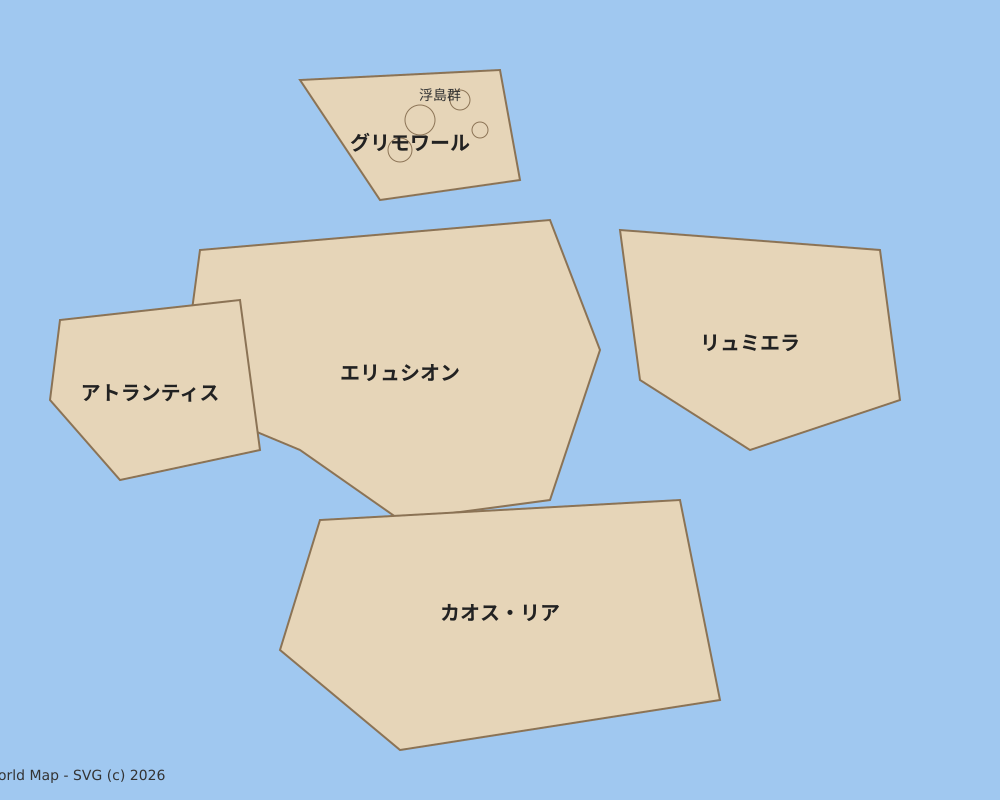
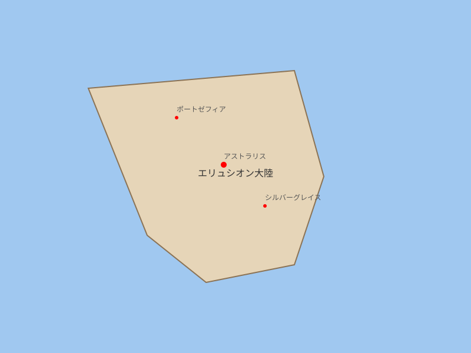
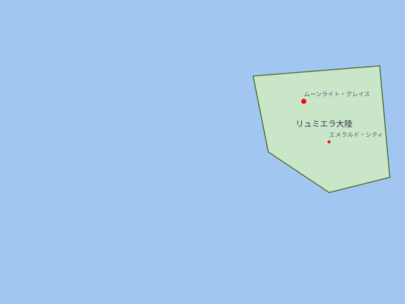
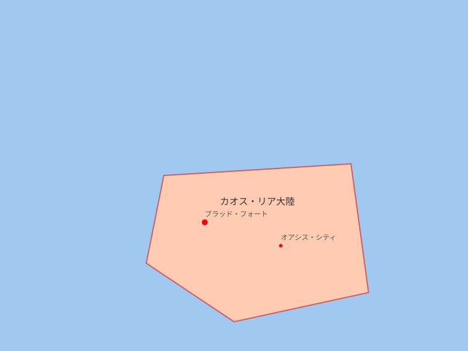
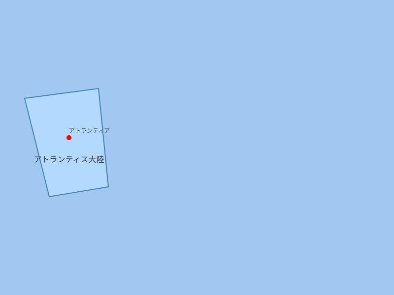
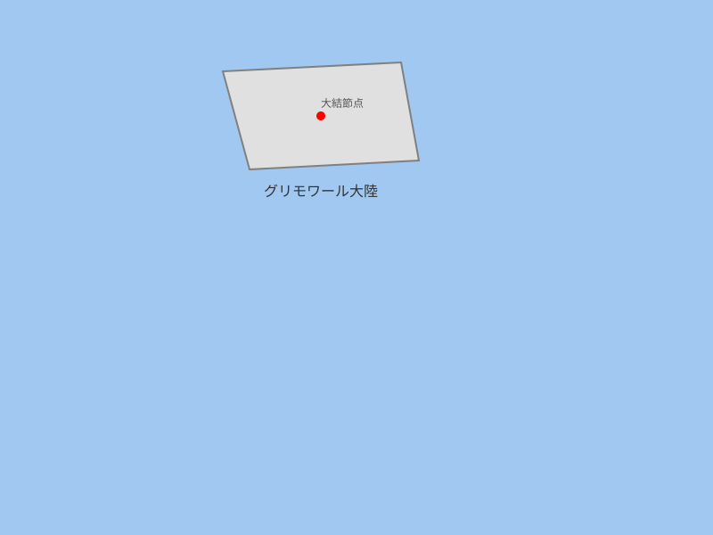

エターナル・アルカディア世界地図
カテゴリ: 世界地図
五大陸、中央海、外海、浮島群を描いた正史ベースの世界地図。エターニア投影法を使用。

エリュシオン大陸地図
カテゴリ: 大陸地図
秩序と繁栄の大陸。人間族の主要居住地。中央に天翔山脈、銀の平野など主要地形を描く。

リュミエラ大陸地図
カテゴリ: 大陸地図
光と魔法の大陸。精霊族と魔法文明が発達。エメラルド・ベルトの大森林と浮島群が特徴。

カオス・リア大陸地図
カテゴリ: 大陸地図
混沌と変革の大陸。様々な種族が入り混じる。紅海砂漠や炎の大地など過酷な地形が広がる。

アトランティス大陸地図
カテゴリ: 大陸地図
水と神秘の大陸。海を越えた古代文明の遺産。フィヨルド群や氷河都市が特徴。

グリモワール大陸地図
カテゴリ: 大陸地図
知識と禁忌の大陸。魔導書と謎が渦巻く。大結節点「エターニア・コア」や時の迷宮が存在。
準備中
アストラリス地域地図
カテゴリ: 地域地図
エリュシオン北東部に位置する首都圏地域。アストラリス首都を中心とする政治・経済の中心地。
準備中
銀の平野地域地図
カテゴリ: 地域地図
エリュシオン南部に広がる穀倉地帯。肥沃な平野と農業地域が特徴。
準備中
天翔山脈地域地図
カテゴリ: 地域地図
エリュシオン中央を南北に貫く山脈地域。険しい山峰と鉱物資源が豊富。
準備中
月影の森地域地図
カテゴリ: 地域地図
エリュシオン北西部、エルフの領地である深い森。精霊の恩恵を受けた生態系。
準備中
エメラルド・ベルト地域地図
カテゴリ: 地域地図
リュミエラ大陸に広がる大森林地域。古代ルナリア帝国の遺跡が点在。
準備中
リュミエラ・アーチ地域地図
カテゴリ: 地域地図
リュミエラ東海岸沖に浮かぶ浮島群。数百の島からなり、月の精霊の力が強い。
準備中
紅海砂漠地域地図
カテゴリ: 地域地図
カオス・リア中央部に位置する世界最大の砂漠。過酷な環境とオアシス都市群。
準備中
炎の大地地域地図
カテゴリ: 地域地図
カオス・リア南部の火山地帯。活発な火山活動と特殊な鉱物資源。
準備中
鉄山脉地域地図
カテゴリ: 地域地図
アトランティス中央部の山脈地域。魔導金属の産地で、ドワーフの鉱山都市が集まる。
準備中
時の迷宮地域地図
カテゴリ: 地域地図
グリモワール中央部に存在する時間の歪みの迷宮。古い禁忌と古代兵器が眠る。
準備中
世界交通網図
カテゴリ: 交通網図
エターナル・アルカディア世界全体の交通ネットワークを概括した図。主要航路、街道、空路、転送ゲートなどを掲載。
準備中
エリュシオン交通網図
カテゴリ: 交通網図
エリュシオン大陸内の交通網詳細図。主要街道、鉄道（魔導鉄道）、都市間航路などを表示。
準備中
リュミエラ交通網図
カテゴリ: 交通網図
リュミエラ大陸の交通網。浮島群間の航路、森の中の小径、魔法による移動手段などを網羅。
準備中
カオス・リア交通網図
カテゴリ: 交通網図
カオス・リア大陸の交通網。砂漠隊商路、オアシス間の航路、危険地帯の回避ルートなど。
準備中
アトランティス交通網図
カテゴリ: 交通網図
アトランティス大陸の交通網。水中トンネル、潜水艦航路、氷上道路など独特のネットワーク。
準備中
グリモワール交通網図
カテゴリ: 交通網図
グリモワール大陸の交通網。危険区域の回避路、魔導船の航路、結界内の安全な道など。
準備中
エリュシオン道路・魔導鉄道詳細図
カテゴリ: 交通詳細図
エリュシオン主要街道と魔導鉄道の詳細ルート。宿場町、駅、トンネル、橋など施設も表示。
準備中
リュミエラ月魔法空中航路詳細図
カテゴリ: 交通詳細図
リュミエラにおける月の魔法を使用した飛行航路。浮島間の空中ルートと安全な高度帯を記載。
準備中
カオス・リア砂漠隊商路詳細図
カテゴリ: 交通詳細図
カオス・リアの砂漠を横断する隊商路詳細。オアシスの位置、危険ゾーン、季節によるルート変更情報。
準備中
アトランティス水中交通詳細図
カテゴリ: 交通詳細図
アトランティス周辺の海中ルート詳細。水中トンネル、潜没路、危険生物区域、潮流情報。
準備中
グリモワール危険区域交通詳細図
カテゴリ: 交通詳細図
グリモワールの危険区域を避ける交通ルート詳細。結界通過ポイント、避難所、警備 station。